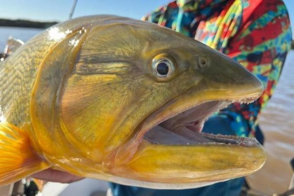

Pesca en Uruguay
Inicio
Lugares
Especies
Videos
Galería
Galería de Fotos

Dorado capturado en el Río Uruguay
Dorado capturado en el Río Negro
Pejerrey en la Laguna Merín
Pejerrey en la Río de la Plata
Tararira nadando en un arroyo en San José
Tararira captada en arroyo grande departamento de Flores
Volver arriba